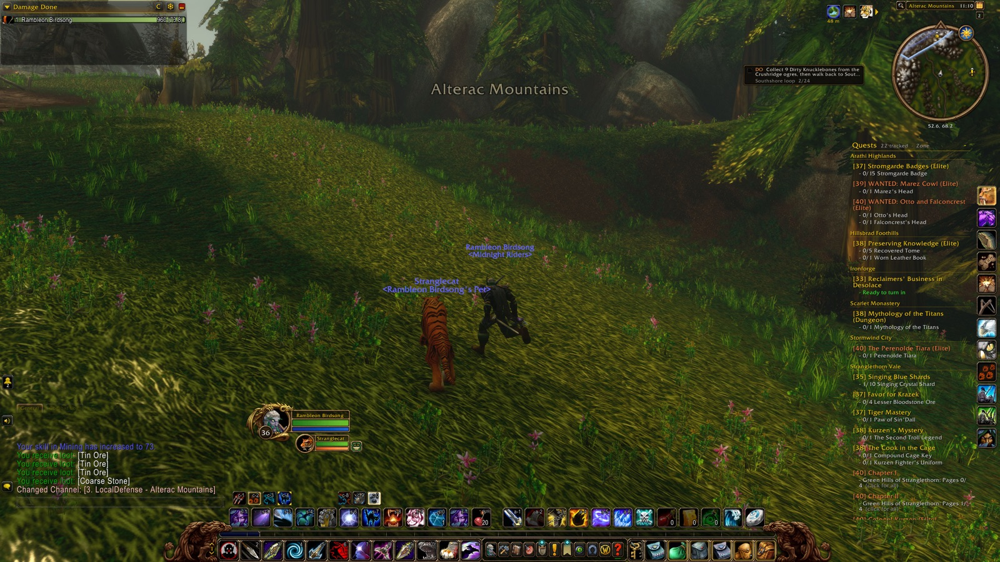
| Quest | Turned in at | Lv |
|---|---|---|
| Hillsbrad Foothills | ||
| Crushridge Bounty | Southshore | 36 |
| Foreboding Plans | Southshore Town Hall | 36 |
| Encrypted Letter | Southshore | 36 |
| Stranglethorn Vale | ||
| Kurzen's Mystery | Rebel Camp | 36 |
| Tiger Mastery | Nesingwary's Expedition | 36 |
| The Stone of the Tides | Booty Bay | 36 |
| Favor for Krazek | The Salty Sailor Tavern | 36 |
| Arathi Highlands | ||
| The Princess Trapped | Drywhisker Gorge | 36 |
| Quest | Picked up at |
|---|---|
| Crushridge Warmongers | Southshore |
| Noble Deaths | Southshore Town Hall |
| Letter to Stormpike | Southshore |
| The Captain's Chest | Booty Bay |
| Troll Witchery | Rebel Camp |
| Lost Shipping Crate | Rebel Camp |
| Water Elementals | Booty Bay |
| Wand over Fist | Refuge Pointe |
| The Riverglades Report | Refuge Pointe |
| Stones of Binding | Drywhisker Gorge |
| Return to Corporal Kaleb | The Salty Sailor Tavern |
| Quest | Picked up at | Since |
|---|---|---|
| Sathrah's Sacrifice | Temple of the Moon | Chapter 3 |
| Crown of the Earth | Dolanaar | Chapter 5 |
| The Forgotten Heirloom | The Jansen Stead | Chapter 8 |
| Save Techbot's Brain! | Tinker Town | Chapter 9 |
| The Day After | Tinker Town | Chapter 9 |
| Westfall Stew | Westfall | Chapter 11 |
| Lost in the Thicket Things | Menethil Harbor | Chapter 16 |
| Essential Artificials | Tinker Town | Chapter 16 |
| Data Rescue | Tinker Town | Chapter 17 |
| The Grand Betrayal | Tinker Town | Chapter 17 |
| Shared Fury | Forest Song | Chapter 19 |
| The Tower of Althalaxx | Darkshore | Chapter 19 |
| Horrors in the Highland | The Green Belt | Chapter 20 |
| A Grim Task | Dun Modr | Chapter 20 |
| The Dark Iron War | Dun Modr | Chapter 20 |
| Death to the Dragonmaw | Wetlands | Chapter 20 |
| Defeat Nek'rosh | Angerfang Encampment | Chapter 20 |
| Syndicate Assassins | Southshore Town Hall | Chapter 21 |
| Insane Druids | Forest Song | Chapter 22 |
| Talk of the Town | Southshore | Chapter 22 |
| The Color of Blood | Old Town | Chapter 22 |
| Bring Back a Bang | Dun Modr | Chapter 23 |
| Slowing the Orc Advance | Silverwind Refuge | Chapter 25 |
| An Alarming Request | Southshore Town Hall | Chapter 25 |
| Costly Menace | Southshore | Chapter 25 |
| Reclaimers' Business in Desolace | Hall of Explorers | Chapter 25 |
| Ironband Wants You! | The Library | Chapter 25 |
| Crashing the Wickerman Festival | Southshore | Chapter 28 |
| Stonegear's Search | Hall of Arms | Chapter 28 |
| Darkspear Islands Clash | Hall of Arms | Chapter 28 |
| Raptor Mastery | Nesingwary's Expedition | Chapter 31 |
| The Cook in the Cage | Kurzen's Compound | Chapter 31 |
| Excelsior | Booty Bay | Chapter 32 |
| Shady Saltseers | The Salty Sailor Tavern | Chapter 32 |
| The Saltseer Captain | The Salty Sailor Tavern | Chapter 32 |
| Colonel Kurzen | Rebel Camp | Chapter 32 |
| Panther Mastery | Nesingwary's Expedition | Chapter 33 |
| Zanzil's Secret | The Salty Sailor Tavern | Chapter 33 |
| The Thandol Span | Thandol Span | Chapter 34 |
| Fight for Warsong Gulch | Refuge Pointe | Chapter 34 |
| WANTED: Marez Cowl | Refuge Pointe | Chapter 34 |
| Stromgarde Badges | Refuge Pointe | Chapter 34 |
| Anyone Can Cook | Boulder'gor | Chapter 35 |
As far as Rambleon knows: a quest picked up before it was installed, or abandoned before it recorded that, is not here.
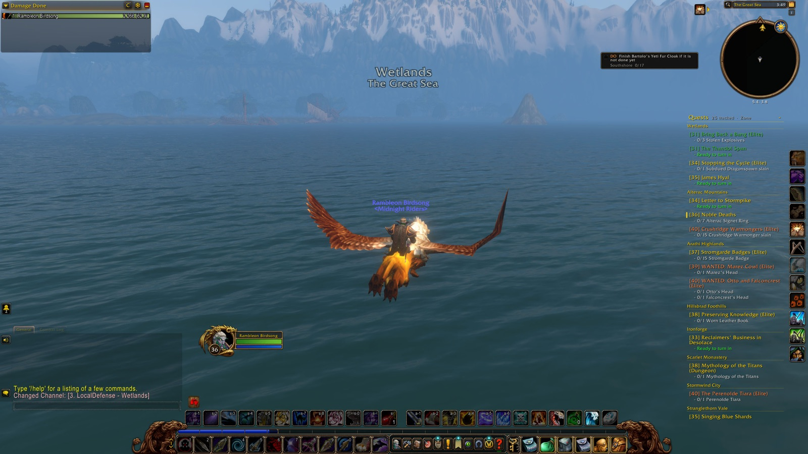
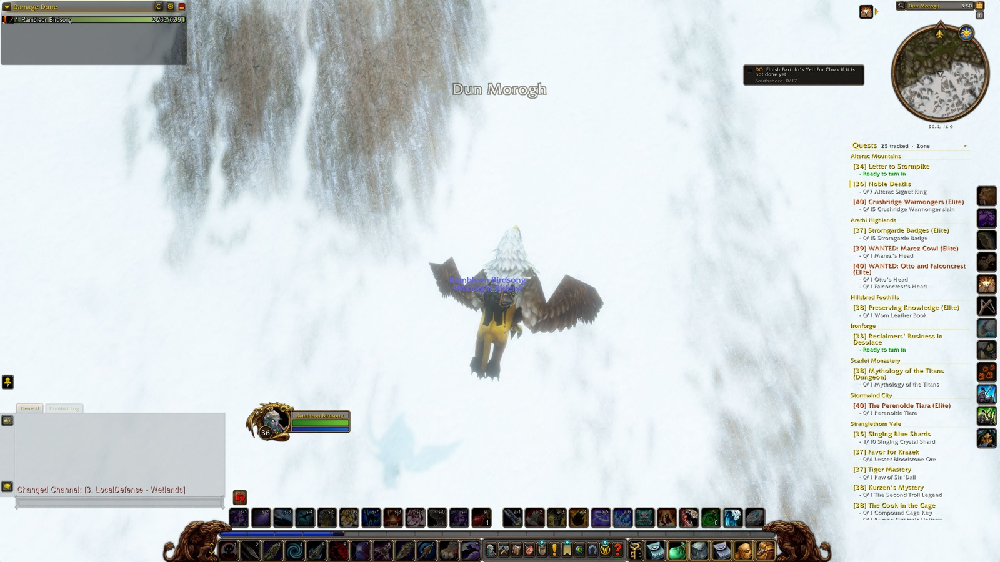
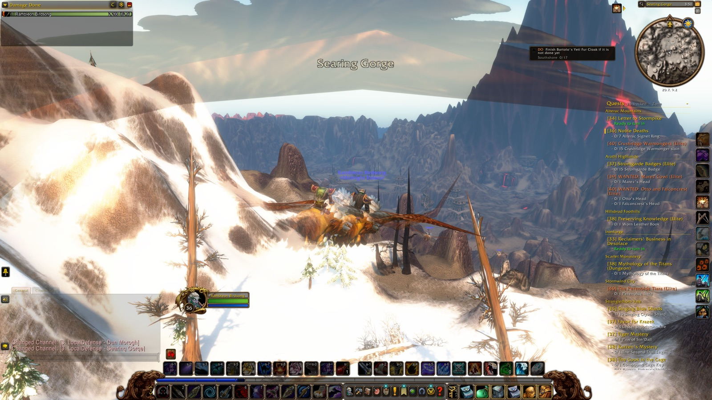
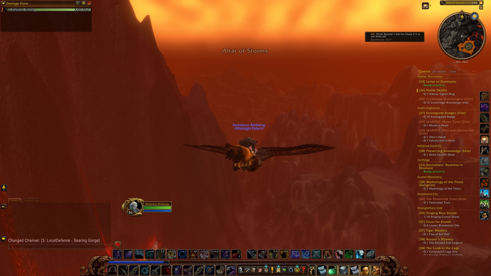
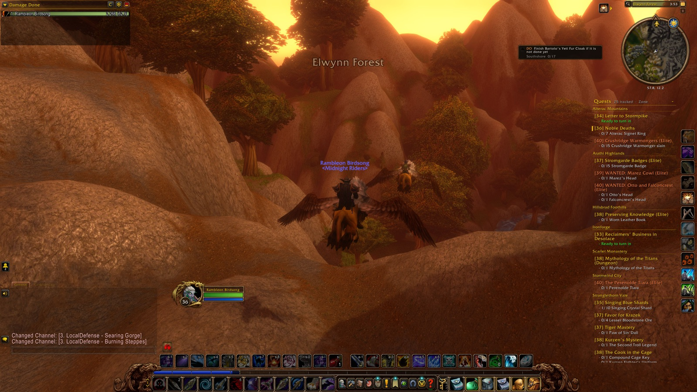
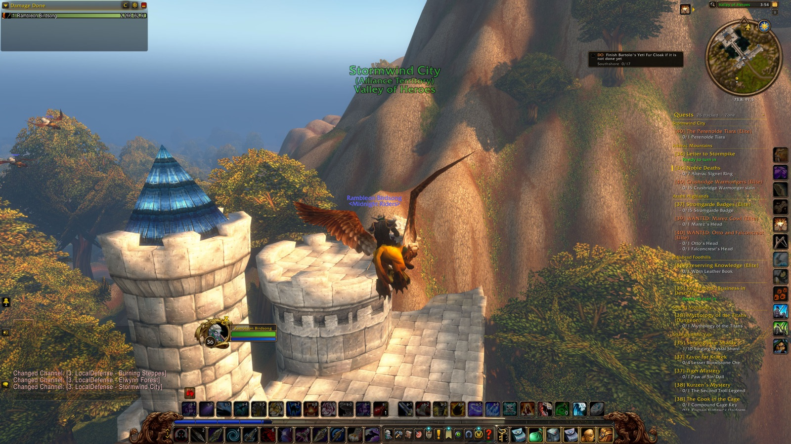
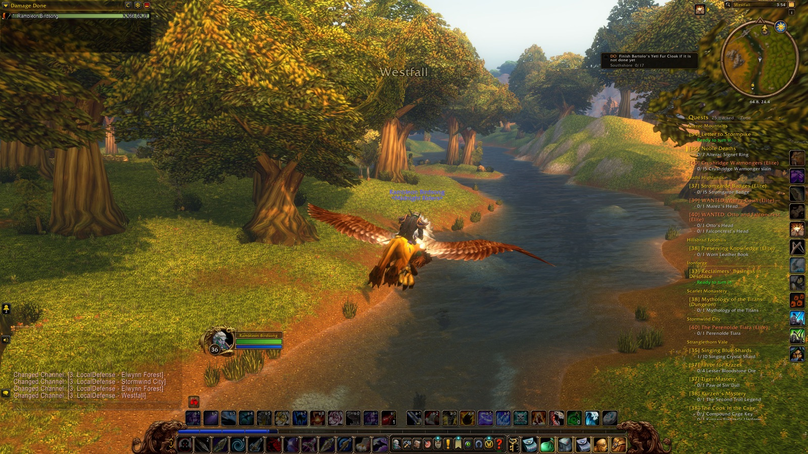
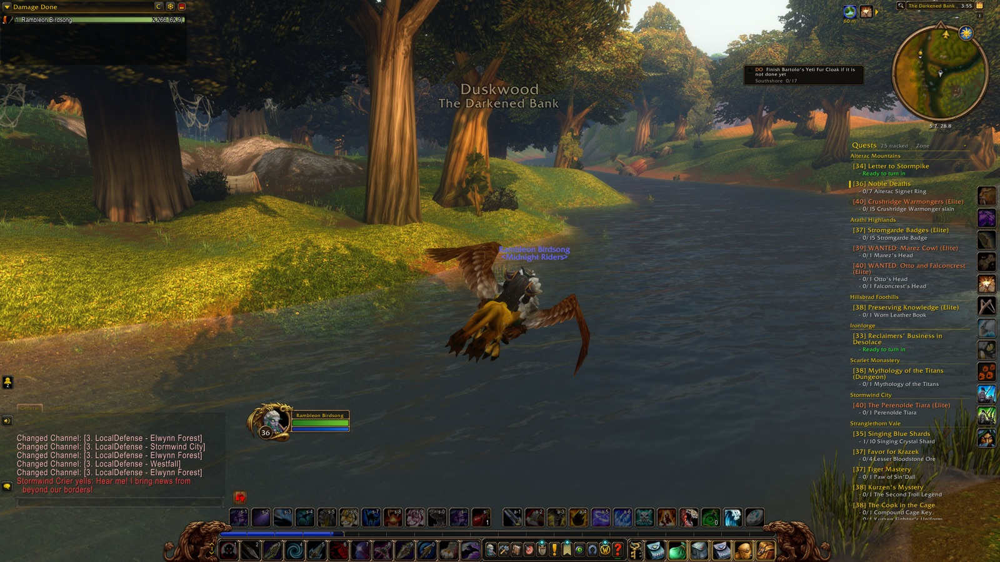
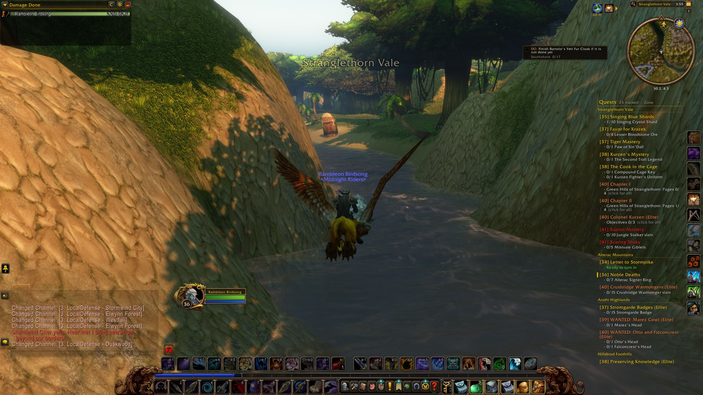
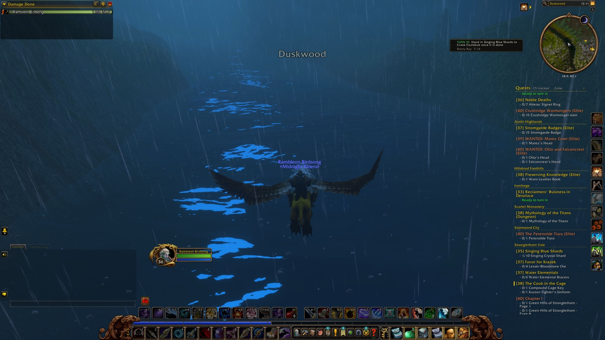
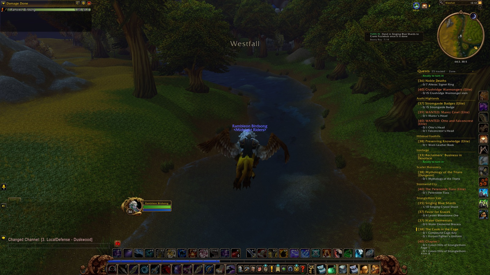
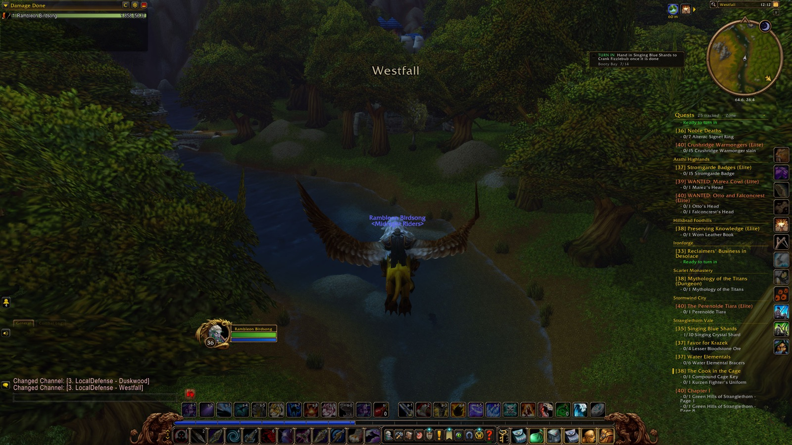
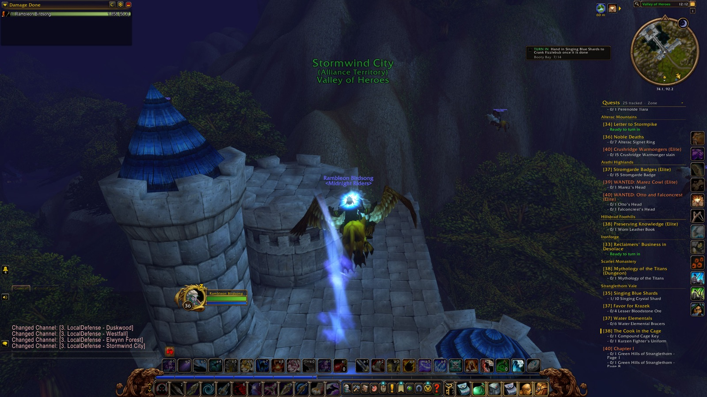
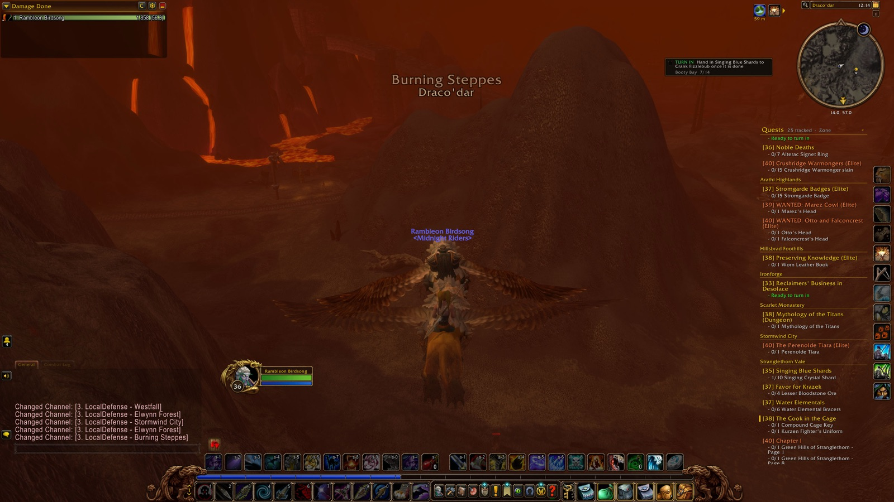
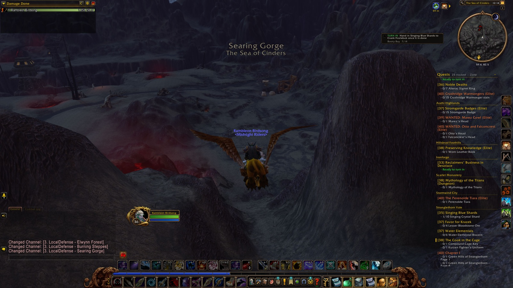
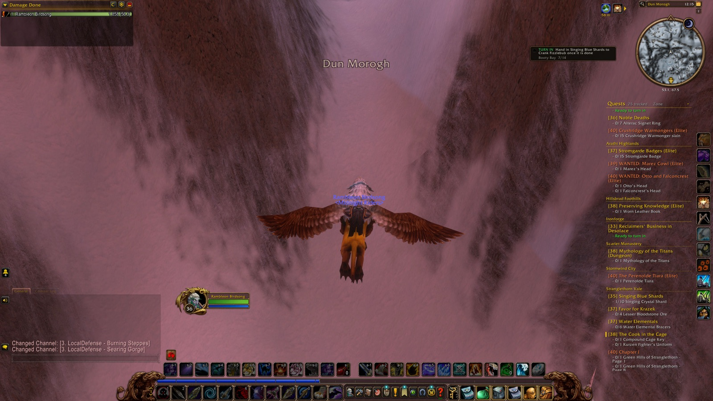
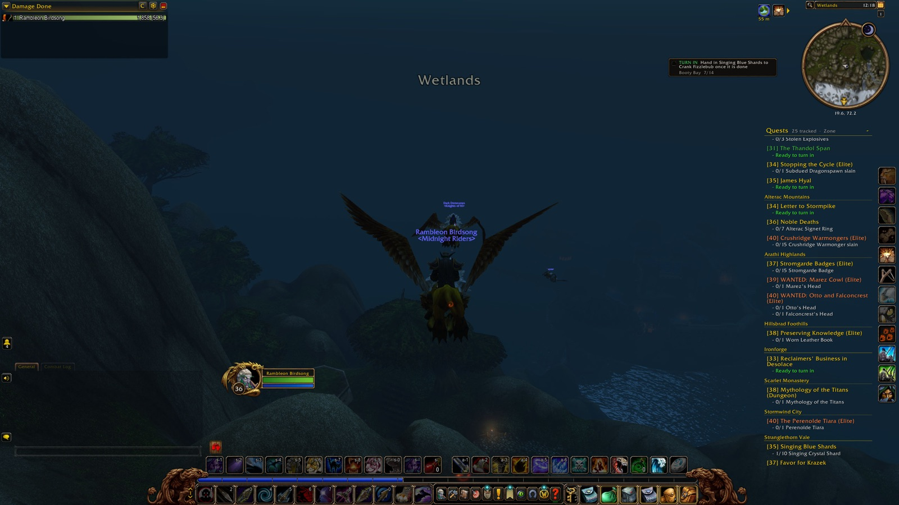
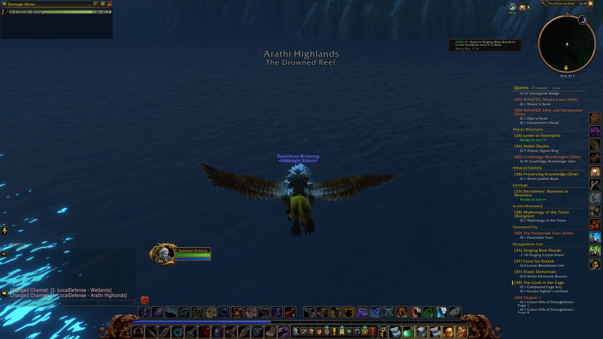